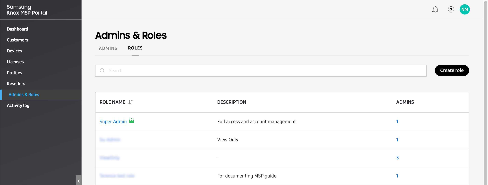
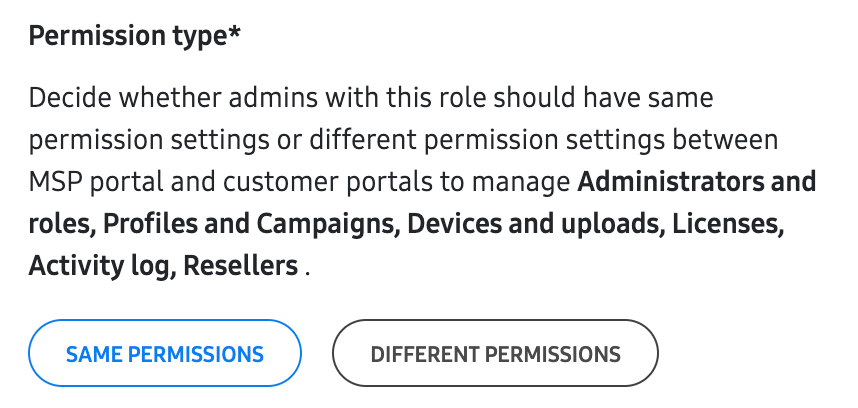
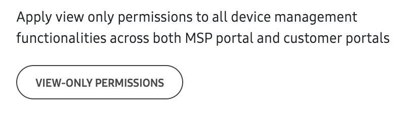
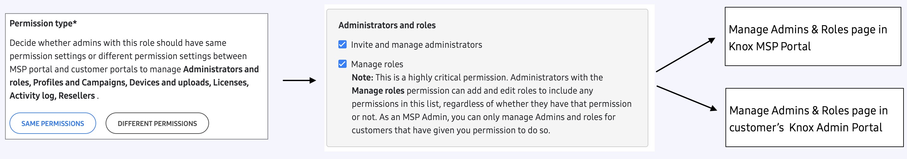
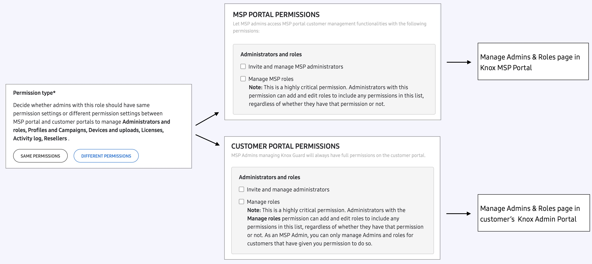

Manage Roles
Last updated June 17th, 2026
When you click the Roles tab, you’ll see a list of every role created in your Knox MSP Portal.

The following information is available in the table:
- ROLE NAME — The name of the role created in your account. Click a name to view or edit the role’s permissions, or to delete the role from your account.
- DESCRIPTION — A description of the role. This field is optional during role creation, and may not be available for all roles.
- ADMINS — The number of admins associated with this role. Click the link to view the names of each associated admin.
Create a role
By default, the Knox MSP Portal includes two roles built into the service: Super Admin and MSP Admin.
The primary account holder (the admin that first signed up for a Knox account) is automatically assigned the Super Admin role. As a Super Admin, you have full access to all Knox MSP Portal functionality, including the ability to delete other admins’ accounts. When inviting other admins to manage your account, you can assign them the MSP Admin role. This role also grants the admins full access to all Knox MSP Portal functionality. However, they cannot delete the Super Admin account.
If you don’t want to give your sub-admins full access to the Knox MSP Portal, you can instead create a custom role that limits them to specific functionality. To create a custom role:
-
On the left navigation pane, click Roles, then in the top-right, click CREATE ROLE.
-
On the Create role page, provide a name and description for the role in the BASIC INFORMATION section.
-
Under Permission type, choose whether you want the sub-admins to have the same permissions for both the Knox MSP Portal and a customer’s Knox service portal, or whether you want the two portals to have different permissions. Depending on the permission type selected, the available permission settings will vary slightly. See Role permissions for more details.

The Permission type options will not appear until you’ve added a customer to the Knox MSP Portal. See Add customers for more information.
-
(Optional) Click VIEW-ONLY PERMISSIONS to automatically set all permissions to view-only status.

-
In the right column, customize your permissions for this role. See Role permissions to learn about each permission setting.
-
Click SAVE to create the role.
About role permissions
Depending on whether you selected SAME PERMISSIONS or DIFFERENT PERMISSIONS, the available role permission settings will vary slightly. The following tables describe each permission, based on permission type:
Same permissions between MSP and customer portals
When selecting SAME PERMISSIONS, the following options are available:
Common permissions
| Permission | Options |
|---|---|
| Customers |
View only — Admins can view the Customers page on the Knox MSP Portal, but they cannot add a new customer or make any changes. Manage customer account — Admins can add and edit your managed customers. After selecting this setting, you must select at least one of the following options:
|
| Administrators and roles |
Invite and manage administrators — Admins will have access to the Administrators page on both the Knox MSP Portal and the customer consoles, allowing them to invite, deactivate, reactivate, and revoke other admins. Allowing this permission also gives the admin the ability to delete, edit, or change permissions for other admins. Practice caution while giving these permissions. Manage roles — Admins will have access to the Roles page on both the Knox MSP Portal and customer consoles, allowing them to create, edit, and delete other roles. An admin with this permission can change their own role to include all permissions. |
| Profiles and campaigns |
View only — Admins can view the respective Profiles and Campaigns pages on the Knox MSP Portal and on the customers’ Knox Configure, Knox Mobile Enrollment, and Knox E-FOTA consoles, but they can’t take any actions. Manage profiles and campaigns — Admins can copy profiles on the Knox MSP Portal, create/edit Profiles on the customers’ Knox Configure and Knox Mobile Enrollment consoles, and create/edit Campaigns on the customer’s Knox E-FOTA console. |
| Devices |
View only — Admins can view the Devices page on the Knox MSP Portal and customer consoles, but they cannot make changes. Manage devices — Admins can perform device actions and get access to the BULK ACTIONS tab on the Devices page on the Knox MSP Portal and customer consoles, but they can’t delete devices. Once selected, you can select the following optional permissions:
|
| Licenses |
View only — Admins can view the Licenses page on the Knox MSP Portal and customer consoles. Manage licenses — Admins can perform license actions like Get a license, Enter license key, and Replace a license on the Knox MSP Portal and customer consoles. |
| Activity log |
View activity log — Admins can view the Activity log page on the Knox MSP Portal and customer consoles. If this permission is disabled (not selected), admins can still access the Activity log page from the Knox MSP Portal navigation menu to view MSP related events, but they won’t be able to view activity log events in the customer’s consoles. |
| Reseller |
View only — Admins can view the Resellers page on the Knox MSP Portal and customer consoles. Manage resellers — Admins can register resellers and manage reseller preferences on the Knox MSP Portal and customer consoles, but they can’t delete resellers. After selecting this option, you must select one of the following:
|
Customer portal permissions
| Permission | Options |
|---|---|
| Device users |
View only — Admins can view the Device users page and download device users as a CSV file on the Knox Mobile Enrollment console. Manage device users — Admins can add device users and edit passwords on the Knox Mobile Enrollment console. After selecting this, you can select the following optional permission:
|
| Dashboard |
View only — Admins can view the Dashboard in Knox E-FOTA, Knox Asset Intelligence, Knox Configure, and Knox Manage (new console) but not make any changes. Manage dashboard view and data collection — Admins can perform dashboard related actions in Knox E-FOTA, Knox Asset Intelligence, Knox Configure, and Knox Manage (new console). |
| Library |
View only — Admins can view the Library page on the Knox Configure console, but not perform any action. Manage library — Admins can add new mobile apps and perform app-related actions like Add app version, Update app in profile, and Download app. Note that you must also enable the Manage devices and Manage profiles and campaigns permissions to fully support this permission. After selecting this, you can select the following optional permission:
|
| EMM |
View only — Admins can view the EMM groups page on the Knox E-FOTA console. Manage EMM groups — Admins can add and edit EMM group information. |
| Service and Preferences |
Manage default support information — Admins can modify the Default support information for Knox E-FOTA on the customer’s Knox Admin Portal > Settings page. Note that disabling this permission grants your admins view-only access to this information. Manage Privacy policy settings — Admins can modify the Privacy policy settings for Knox E-FOTA on the customer’s Knox Admin Portal > Settings page. Note that disabling this permission grants your admins view-only access to this information. |
| Reporting | Manage reporting settings — Admins can modify the Issue report settings for Knox Asset Intelligence in the Knox Admin Portal > Settings page. Note that disabling this permission grants your admins view-only access to this information. |
| Remote support session initiation |
Manually start — Allows admins to send a code to manually start a Knox Remote Support session. Automatically start — Allows admins to automatically start a Knox Remote Support session without a code. |
| Remote support device control |
View only — Admins can view the device’s screen during a Knox Remote Support session but not take control or take any actions. Manage device during session — Admins can take control of devices and perform remote support actions. Selecting this permission enables the following options. You must select at least one option below:
|
Knox Manage permissions
Knox Manage (new console)
| Permission | Options |
|---|---|
| Users |
View only — Admins can view the Users page on the customer’s Knox Manage new console, but not take any actions. Manage users — Admins can take user-related actions. After selecting this, you must select one of the following:
|
| Devices |
View only — Admins can view the Devices page on the customer’s Knox Manage new console, but not take any actions. Manage devices — Admins can take device-related actions. After selecting this, you must select one of the following:
|
| Groups |
View only — Admins can view the Groups page on the customer’s Knox Manage new console, but not take any actions. Manage groups — Admins can take group-related actions. After selecting this, you must select one of the following:
|
| Organizations |
View only — Admins can view the Organizations page on the customer’s Knox Manage new console, but not take any actions. Manage organizations — Admins can take organization-related actions. After selecting this, you must select one of the following:
|
| Apps |
View only — Admins can view the Apps page on the customer’s Knox Manage new console, but not take any actions. Manage apps — Admins can take app-related actions. After selecting this, you must select one of the following:
|
| Content |
View only — Admins can view the Content page on the customer’s Knox Manage new console, but not take any actions. Manage content — Admins can take content-related actions. After selecting this, you must select one of the following:
|
| Profiles and policies |
View only — Admins can view the Profiles and policies page on the customer’s Knox Manage new console, but not take any actions. Manage profiles and policies — Admins can take actions related to profiles and policies. After selecting this, you must select one of the following:
|
| Identity provider |
View only — Admins can view the Identity provider page on the customer’s Knox Manage new console, but not take any actions. Manage identity provider — Admins can take identity-provider-related actions. After selecting this, you must select one of the following:
|
| Certificates |
View only — Admins can view the Certificates page on the customer’s Knox Manage new console, but not take any actions. Manage certificates — Admins can take certificate-related actions. After selecting this, you must select one of the following:
|
| API Integration |
View only — Admins can view the API Integration page on the customer’s Knox Manage new console, but not take any actions. Manage API integration — Admins can take actions related to API Integration. After selecting this, you must select one of the following:
|
| Reports |
View only — Admins can view the Reports page on the customer’s Knox Manage new console, but not take any actions. Manage reports — Admins can take report-related actions. After selecting this, you must select one of the following:
|
Knox Manage (original console)
If you require your sub-admins to access the Knox Manage original console, you can grant them the following permission:
- View only — Grants your sub-admins access to view your managed customers’ Knox Manage original console, but sub-admins cannot make any changes.
- Full access — Grants your sub-admins full access to your managed customers’ Knox Manage original console, including the ability to make changes to users, groups, profiles, and more.
Different permissions between MSP and customer portals
When selecting DIFFERENT PERMISSIONS, you have access to the same set of options as you would when selecting SAME PERMISSIONS, except you’re managing the permissions for Knox MSP Portal and a customer’s console separately.
For example, when configuring the Administrators and Roles permission when selecting SAME PERMISSIONS, you are allowing admins to view or manage the Admins & Roles page in both the Knox MSP Portal and the customer’s console (Knox Admin Portal) at the same time. This means if you grant an admin full access to the Knox MSP Portal’s Admins & Roles page, then they will also have full access to the Admins & Roles page in your customer’s Knox Admin Portal.

However, if you select DIFFERENT PERMISSIONS, you will have to manually configure the Admins & Roles permissions separately for both the Knox MSP Portal and the customer’s Knox Admin Portal. This means you can grant an admin full access to the Admins & Roles of the Knox MSP Portal (thus allowing admins to invite other admins to the Knox MSP Portal), and view-only access to the customer’s Admins & Roles page (thus preventing them from inviting or removing other admins in the customer’s Knox Admin Portal).

On this page
Is this page helpful?